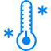
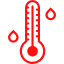

<div class="row"  ng-controller="MapCtrl">
    <ui-gmap-google-map id="map-div" class="col-md-12" center='mapFeatures.center' zoom='mapFeatures.zoom' ng-click="closeInfoWin()">
        <ui-gmap-marker ng-repeat='city in getCityCoords()'
                idKey='city.name'
                coords='city.location'
                events="marker.events"
                icon="{url: iconPath + mapConditionIdName[city.majorityCondition] + ext}"
        >
        </ui-gmap-marker>
        <ui-gmap-window
                coords='infoWindow.coords'
                show='infoWindow.showInfo'
                closeClick='onCloseInfoWindow()'
        >
            <div>
                <div layout="row" layout-align="center center">
                    <h3 >{{infoWindow.cityName}}</h3>
                    
                </div>
                <div>
                <p>  {{infoWindow.weatherResumeMin}}</p>
                <p>  {{infoWindow.weatherResumeMax}}</p>
                </div>
                <a ng-href="#!/description/{{infoWindow.cityName.toString()}}">Click</a> for details.
            </div>
        </ui-gmap-window>
    </ui-gmap-google-map>
</div>